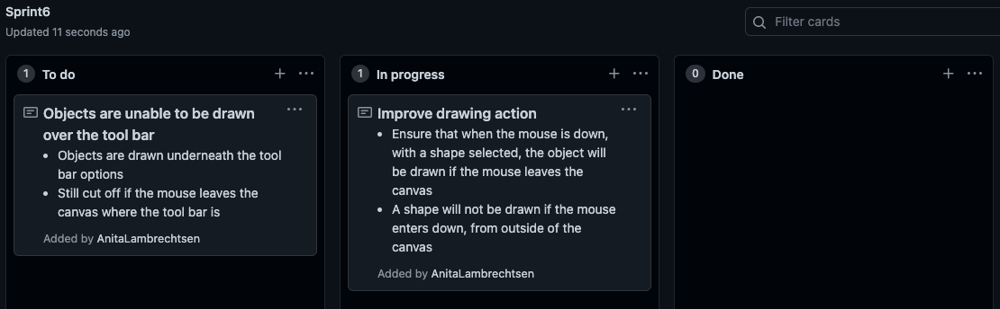

Brief
For this project, I aim to create a drawing application that allows users to draw shapes, lines and
manage colours. The overall purpose of this application is to help educate young children on the
basics of geometry through various shapes, and encourage creativity in a child’s mind; giving them
the freedom to endlessly explore principles of composition and style. This should hopefully include
the simple features of a drawing application like shape, size and colour tools, which may lead to a
more advanced canvas where older children can continue to learn from new methods and ways of
thinking about creativity. Through the development of creativity at a young age, this will help to
advance mental growth in things such as problem-solving and new possibilities, while also helping
to gain an understanding of how a child thinks or feels.
I intend to follow the agile process throughout the production of this project, as I believe
this method is best suited to achieve my ideal outcome successfully. I will also be using GitHub,
which is a website that can manage and store my entire project accordingly, including the project
backlog and projects for each sprint (which are important aspects of the agile process). GitHub can
also record and track each stage of working throughout the build, allowing access to previous
versions of my final project in case unpredicted situations were to occur.
Reference inspiration images

Project Backlog
Sprint One
Aim: My aim for sprint one is to create a basic canvas with a grid, that follows the movement and acknowledges the boundaries of the mouse. On top of this, I aim to include a traceable guide that once released by the mouse, a permanent box is drawn.
Plan
Sprint one board
Diagram of expected outcome

Pseudo-code
Link to the Canvas Page
Testing
-Component test 1-
In this video testing to the left, I am testing the boundaries on the mouse through console logging the class 'InteractiveObject', which I have designed to tract the status of the mouse. It is shown in the video, that the mouse's movements (click, down and up) will only be recorded if the mouse is inside the canvas, this is because in the future of this project, the user should not be needing to draw or control elements outside canvas as that is the primary use for a canvas. It can also be seen that my grid class is successfully working in the background of the canvas and the canvas itself has been created without fault. So far, in these early stages I have been presented with no unexpected errors.
-Component test 2-
In this video test, I am testing the functionality of the draggable guide and the drawing of rectangles. As
shown in the beginning of the video, as long as the mouse stays within the canvas. The draggable guide correctly
follows the dragging of a users mouse to indicate to them where the box will be drawn and when released,
the box also correctly follows the position of the draggable guide when released. While these aspects of my
code do work accordingly, there are also some errors that occur.
Due to the fact that the mouse's actions are not
recorded while outside the canvas, if the user was to press and hold the mouse inside the canvas, to then
move the mouse outside the canvas without the mouse being released, a box cannot be drawn. So when the
mouse returns to the canvas up, the guide still follows the mouse but no box is drawn. A similar thing occurs
when the mouse has gone outside the canvas, to return down. Because the origin point where the mouse clicked
down was not recorded, upon releasing the mouse inside the canvas, the box is drawn in an incorrect place and
there is an absence of the draggable guide. Finally, due to the method I used to create the draggable guide,
the sizing of the inner circle sometimes ends up not sizing correctly in relation to the outer box, which
results in the circle to surpass the edges of the box.
Sprint Review
In summary, this sprint has been fairly successful in terms of setting up the project for a large range of possibilities. I can track the relevant movements and position of the users mouse which is important for many aspects like drawing and selecting shapes and options. As of this sprint, the user can draw a coloured box with the assistance of the draggable guide inside the gridded canvas. While there were a few errors that I noticed to do with the user entering and exiting the mouse as well as with the draggable guide (which I discussed in detail in the testing), I intend to fix these errors in future sprints so the program is error-proof, which is something very important when dealing with the unexpected nature of children.
Sprint Two
Aim: My aim for sprint two is to create two buttons that will allow the user to draw either an ellipse shape with their mouse or a rectangle shape. I aim to have a working class and function that will correctly draw and show a draggable guide for the ellipse, as well as create a button class to manage these two possible options for drawing.
Plan
Sprint two board
Diagram of expected outcome
Pseudo-code
Testing

getBoundary(x, y, w, h, x_m, y_m){
return x_m > x && x_m < x + w && y_m > y && y_m < y + h;
In this video testing to the left, I am testing the functionality of sprint 2 and how both my ellipse, guide and buttons work. As it can be seen, moving from drawing rectangles to ellipses is manageable and works as intended for the user. It is a clear for the user what the purpose of each button is and now the user has slightly more variation in my drawing program. I had a small problem with the guide earlier on in the sprint (as seen in the image below), where the circle was not drawing in the correct position. Fortunately, this was only a very small mistake, as I quickly realised that I had forgotten to divide my x+w and y+h values by two, so the circle guide would correctly draw where the mouse was clicked. Aside from this, this sprint ran fairly smoothly as I was able to add the ellipse class and function, to be ran dependant on the status of the InteractiveButton class, which I created for the purpose of selectable buttons. I have also included a few lines of code that I have used for the boundaries for the button class. This was important to get right so the buttons work as desired. At the end of the video it is shown how the same issue with the rectangles and the user leaving the canvas also occurs when the user draws an ellipse. While I clearly have not fixed this error in this sprint, I still aim to improve this in future sprints so my program is error free and able to be used by a user seamlessly.
Sprint Review
In the end, this sprint was completed as expected and there were no major errors that I faced while building it. I successfully created an ellipse function and class so the user can draw ellipses at this current stage. Pairing with this, the draggable guide for the ellipse also is working without any remaining errors. I am satisfied with how the InteractiveButton class functions as the boundaries and task that each button is set to do, is completed in the intended way. I think this base class should work well for the future of this project, especially as most sprints aims are to include a new feature to the drawing project, each that should have a different button to be able to use it. All the current issues are ones that I addressed in sprint 1, as the same thing occurs when drawing ellipses if the user enters and exits the canvas, which should be something I will fix in a future sprint.
Sprint Three
Aim: My aim for sprint three is to create a colour swatch that consists of the colours and ranging opacities for each one in my colour array (colArray). With this, the user should be able to select the colour of the shapes drawn from a clearly presented group of colours
Plan
Sprint three board

Diagram of expected outcome

Pseudo-code
Testing
-Component test 1-

The image to the right, I am testing if the swatch's layout prints correctly. There are many ways that a swatch can be printed out and displayed for a user. I wanted to be sure whilst designing this feature, that it was not overwhelming to the user (minimalist) and that it was printed in a way that would be recognisable to the user as a colour swatch, without any written indication. To print the swatch, I created an array called swatch_set, so I could loop through the colour array that contains my colour palette, with the varying opacities on a new line. Using this method of printing my swatch out complies with the relevant implication of future proofing. This is because I can easily add more colours and/or opacities that will be looped through and added to the swatch.
-Component test 2-
In the video to the right, I am testing if my main swatch function works how intended. This would be when a colour and opacity is selected, the object is drawn with the correct properties. My swatch class is very similar to my interactive object class. The few key differences is that a text variable is not required, and instead of the fill colour changing while hovering over or selecting the button, the outline colour is what changes. It was necessary to have the outline change colour because the colour is what the user is selecting. From here, I ran the swatch through the loop that I have already created. As you can see in the video, the colour and opacity will correctly change for both shapes when a particular button in the swatch is selected, meaning that the implementation of this component went smoothly.
Sprint Review
In summary, this sprint worked accordingly and no impactful errors occurred while I was building each component. While considering the aesthetics and recognisability of my swatch, I was able to print my intended design successfully with a loop through both arrays. On top of this, I was able to then create a swatch class successfully and make each unique colour and opacity into a button that the user is able to select and change the colours of shapes. I believe that this was an important step to follow through the principles of agile, as an essential aspect of a drawing function is the option to change the colour of items. I am satisfied with how this sprint went and no unexpected errors occurred.
Sprint Four
Aim: My aim for sprint four is to add two new shape options to widen the drawing possibilities for users with a triangle and line option. As well as this, I also want to implement a clear canvas, undo and redo option for shapes that have been drawn.
Plan
Sprint four board

Diagram of expected outcome

Pseudo-code
Testing
-Component test 1-

As can be seen in the first testing image to the left, I was successfully
able to create a triangle class and function by starting with beginPath(),
which then followed manually drawing and moving the next line to a
certain point. This class and function did
correctly make a triangle, although I found it difficult to work out the
correct point values for an isosceles triangle. The triangle in the image
is one of my many attempts to assign the correct values for the object.
As well as this, I also wanted to create a line tool, where the user can
draw a line that spans from the mouse down point to the release point.
This was not difficult to create a new button for, and due to the agile
process, I will embellish this option in future sprints. As seen in the video
to the left, I managed to successfully work out what the correct variables
were to print the triangle as intended, and the line is also working
accordingly. Both new objects can also have their colour and/or opacity
adjusted, with option bar that can be easily switched between.
-Component test 2-
For the second component that was implemented in this sprint, I added in a clear canvas option. To do this, when the button is clicked, the object array is set back to zero. When this occurs, all items that have been drawn on the canvas will be removed so the user can now create new drawings and/or clear a cluttered canvas. When adding this feature, there was no unexpected errors that occurred during the process.
-Component test 3-
To create an undo option, I popped the last object that was drawn in
the object array. As you can see in the first video to the left in this
component, the undo button worked fairly well, as only one object would
be removed once the undo button was properly clicked on. An unintended
error occurred that I was quickly reminded of when building this button,
of which there are no boundaries on the clickable buttons located within
the canvas boundary. Due to this, as can be seen in the console log, when
the undo button is selected to undo, a new object will be formed to
remove from the object array when clicking an option in the toolbar. This is why the undo
button needed to be clicked more than once before a noticeable object was removed from the
canvas. To fix this error, I set a new variable to the width and height of the canvas
without the buttons, so a new shape can only be drawn within those set
values. Due to the fact that I am following the
agile process, I implemented a simple boundary check, which
will be later improved so manual measurements do not need to be assigned
particular values.
As seen in the second video, upon adding the
boundary feature, the user can no longer start a drawing in the toolbar
area, and so if they click on a button, no
object will be drawn. What I have also demonstrated in this video is that
this does not apply when the user ends the shape in the toolbar, meaning that
a shape may be drawn over buttons and covering them. This issue I intend
to fix in future sprints, as currently the functionality of my program due
to this and the other issue with boundaries I previously mentioned, is
not at an acceptable standard.
As shown in the third video in the
component test, upon fixing up this error, the undo function now
functions in the way that I had intended it to be.
-Component test 4-
When building this final component for the sprint, I used a similar method to the undo component. Through creating a removedSet array, I slightly altered the undo component as instead of only popping the last object drawn from my objectSet array, I then pushed the item into the new array called removedSet. From here, I reversed this action when the user intends to redo this aspect, by instead popping the last drawn item in the array and pushing it to my object array. This component mainly worked the intended way, although I noticed that an unexpected error would occur when there was nothing in the object or removed array. To fix this error, which has been shown to be fixed in the final video of this sprint, I included an if statement, so that items will only be popped from the arrays if they are greater than zero-in-length.
Sprint Review
In summary, this sprint worked mostly as intended and all expected components were eventually successfully incorporated into my main program. In this sprint, after finding the correct values for the triangle points, I added two new shape options for the user in this drawing program to give them a wider variety of accessible tools. I am satisfied with how the isosceles triangle is drawn upon the release of the users mouse and will embellish the line option later on in the production process. For the second component that was added in this sprint, the clear canvas option was built smoothly without any intended errors and ran in the correct way. Upon creating the undo and redo components, I noticed that some form of boundaries will also need to be implemented in this sprint, so components will work the intended way. It is clear that this method used (as discussed above) will need to be addressed and altered in future sprints, due to the fact that it does not follow the future proofing relevant implication. Once this aspect was included, I was satisfied with the way that the undo and redo options behaved with varying possible inputs that a user could make, which I tested above. I believe that this sprint was successful in the regard where almost all errors that occurred where properly addressed, and many aspects were still able to be cleanly build without errors.
Sprint Five
Aim: My aim for sprint five is to add a feature to my shape tools that is very common in drawing tools such as Google Drawing and Adobe Illustrator. I aim to give the users the ability to hold down their shift key, that will turn a rectangle into a square or an ellipse into a circle, if either button is selected and the shift key is held when the mouse is released.
Plan
Sprint four board

Diagram of expected outcome
Pseudo-code
Testing
-Component test 1-
In this first component test, I am testing whether my circle class functions
in the intended way. As seen in the video, I have not altered the draggable
guide to match the circle, as all I have done in this first component
is ensure that the circle is being drawn correctly, in relation to the users
mouse when selected. The implementation of this component went smoothly,
without any unexpected errors.
Another noticeable addition that I made in
this sprint is to do with styling and aesthetics. I slightly changed the font
to still be readable, though less bold, so I have room to add more features in
the near future. As well as this, by making the clear button red, users will
recognise this as a sign of a warning due to things like stop signs and traffic
lights. This is important because it will clear the whole canvas, so they
are warned to consider clicking the button beforehand. Its position in the
top left corner also is to subtly aid the users, improving the usability of
my program, as users should also be familiar with the idea of a clear or exit
button located in either the top left or right corner of a screen or object. Using this
similar logic, an undo button with a pink/light red tone also indicates that it will do a
similar action to a clear canvas button, as instead of clearing all objects,
only one object is removed. The green redo button, which is a colour of nature
and renewal, also makes aesthetic sense to colour it this colour, so users have
a subconscious idea that nothing will be removed when selecting this button.
-Component test 2-
For the second component test in this sprint, I was testing the implementation of the two event listeners, 'KeyDown' and 'KeyUp'. Through console logging the key that was help down and then released, I was able to test if I was successful in this aspect. This was a simple addition to my drawing program that happened without any unintended errors.
-Component test 3-
For this next component, I focused on the draggable guides of both my
rectangle and ellipse buttons while the shift key is held. From this first
component test, I am satisfied with the way that the rectangle guide is,
although the circle guide is not sizing correctly. To create the rectangle
guide, I updated the height and width variables to be the same, depending
on what the smaller value is. I believe that this is a good design and
should work when it comes to actually drawing the shape. The ellipse on the
other hand, mostly works as intended, although, in some cases the ellipse
will extend the square when the mouse crosses over the diagonal line that
can be seen in the guide.
To fix this error, as seen in the video
below the first one, I altered the variables of the circle, so it will not
extend the box. Due to this, I am satisfied with how the guides for both
buttons behave, and the implementation of drawing the shapes should happen
in a similar way.
-Component test 4-
As seen in the first video test of drawing a circle while the shift key is held component,
when I attempted to draw the circle while the shift key is held and the ellipse button is
selected, a circle is drawn in the correct position if the mouse and shift key is released at
the same time. Unfortunately, the circle was also being drawn if the shift key is hit without
the mouse being down while the ellipse button is selected. This means that
there is an error in the section of my program related to how the shape is
being drawn and possibly the variables that are being used to draw the circle.
Fortunately, the drawing of the ellipse has not been altered if no additional
keys are pressed with the ellipse button selected. I also commented out the draggable
guide component, as I believed that it would be easier to ensure that the two
components work co-dependently before combining the two of them. Due to this aspect,
I also noticed that there were two possible ways that I could have the
circle drawn while the shift key is held. The first possibility would be where
the original draggable guide was in the previous component, starting at the where
the mouse was first down. This would then have the diameter of either the width or
height (depending on what was smaller). If I was to continue with this option, the
box that the circle is drawn it will be disconnected from the mouse. This is because you
cannot force the mouse to go in certain positions like where the perfect
circle would end in javascript, as the user must be able to control their mouse
due to the malicious possibilities of designers, such as forcing a mouse to click a
link that will download malware onto the user's device. The second design
option is to keep a base rectangle for the draggable guide, and the ellipse in
the centre will change from an ellipse to a circle depending on whether the
shift key is still held.
As seen in the next video, I decided to go with the
second design for drawing a circle while the shift key is held. This is because
I believe the design is cleaner and easier for users to understand. This means
that the mouse will be constantly still attached to a guide and the ellipse
or circle will be drawn from the centre point of when the mouse is first down,
to when the mouse is released up. To fix the error that occurred in my last test,
I altered the variables that I was using when drawing the circle and with a set
design option, it was easier to result in the outcome I intended, so the
circle is drawn correctly. In the final video, I combined both the correct
way the circle is being drawn and the altered draggable guide to fit the
second design. I am satisfied with how the ellipse cleanly shifts from an
ellipse to a circle from within the rectangle when the shift key is held
and I believe this is easily understood by users.
-Component test 5-
When implementing the shift key option to the rectangle shape component, the first video highlights the errors that I were faced with. If I was to use the first design method, this would once again separate the mouse from the guide, and so I updated this method as well, to match the second design. On top of this, I noticed that the square was not able to be drawn in the top right or bottom left. In the second video, I resolved this error through using abs, as the values would become negative and unable to be drawn as the rectangle was being drawn based on whether the width or height was larger, so in particular directions this would incorrectly change. The draggable guide follows a similar design to the ellipse, which can be seen in the second video, where the transition from a rectangle to a square is also clean and ended up being following the design that I had intended. Mostly, in the implementation of this component, I followed a similar method to the ellipse button, with if else statements for whether the shift key is held or not.
-Final test-
Finally, I did one last final test of this sprint to check that everything is working accordingly, as there were many components to this sprint. One noticeable feature that I altered at the very end was to take out the circle button. I did this because now the users can create circles through the ellipse function, so a separate button for the same feature is unnecessary.
-Usability test-
At the end of this sprint, I thought it would be fitting to do a usability test. The relevant implication of usability is an important thing to consider, especially when designing a program for the intended audience of children, so everything must be relatively comprehensible. As the main purpose of this program is to be a drawing program, if it is difficult to produce drawings, then the usability of the program is failing. Later in the development of my program, I will also do a test on another person to test for unexpected behaviour. From a personal test, I found my program to be easy to use and draw with. I was grateful for undo and redo buttons as there were a few mistakes made along the way, which is a benefit in the regard of functionality. Overall, I am satisfied with the progress that I have currently made, although there are still further features that I hope to achieve to enhance and develop drawing possibilities.
Sprint Review
This sprint did have some unintended errors, although I am satisfied with the final outcome. In this sprint, I introduced circles and squares that can be drawn when the ellipse or rectangle button is selected and the user holds down the shift key while drawing. I did this through creating a new event listener which was successfully incorporated into my InteractiveObject class. When presented with some errors, I realised that there were two main designs that I could pick between when coding how the ellipse and rectangle moves into a circle or square when the shift key is held. I am satisfied with the design that I chose to follow through with, even though there were some unexpected errors which occurred while building the design. Some of these errors include incorrect placements of drawn objects in relation to the mouse and glitching draggable guides. Thankfully, I was able to internalise any additional errors that occurred in the process of building this sprint. As well as this, I made a few minor changes in terms of the aesthetics such as colour and placement. At the end of this sprint, I decided that it was also a good idea to do a usability test to see if my program is on track to matching the original brief.
Sprint Six
Aim: My aim for sprint six is to improve the boundaries of the canvas which is an error that I have previously mentioned earlier on in the project. This occurs when the user is drawing and the mouse leaves the canvas, or is down while entering the canvas. The user should also not be able to draw over the options, but still be able to draw them, as the options are located on the canvas.
Plan
Sprint four board
Pseudo-code
Testing
Component test 1
In this first component test, I figured that the way to solve the error occurring when the mouse leaves the canvas is through adding an if condition. While the mouse has left the canvas, if the mouse is down, then the mouse should be considered as up, and the boolean 'inBounds' and 'mouseIsDown' is false. This fixed the error that has been occurring because an object is drawn once a mouse that has been down is released, so as soon as the mouse leaves canvas the object will be automatically drawn at the edge as it is set to be up. This also means that when the mouse is entering the canvas held down, it will not be considered down, so an object will not be drawn upon release.
Component test 2
For this second component, my aim is to ensure that the user cannot draw an object over the toolbar. This is because it is crucial for the user to still be able to interpret the toolbar with all the buttons, for the purpose of usability, which would not be possible with a shape covering them. I did this using a JavaScript method which is to create a separate area from the main canvas that will be clipped. As the mUp() is still considered when the user's mouse leaves the canvas, the shape will be drawn at the edge of the canvas, although it will be drawn underneath the toolbar. As the toolbar is still located on the canvas, I enjoy this feature in my program instead os setting the mUp() to be within the clipped area. This also leaves the possibility for further options in the future of my program. These could be for the toolbar to be moved or minimised within the canvas that over the canvas and the objects drawn within it. In this first video test, everything is working seemingly as intended, although the toolbar alterations when hovered over or selected are not running. As I shortly noticed, this was because I had not included ctx.restore() at the end of my update class, which meant that these features of the toolbar were being clipped in that particular area. As seen in the following video, by including this line of code, my program was functioning as intended and these boundary errors have been resolved.
-Noticed issue from previous sprints-
Upon further trialling this sprint, I noticed a very small but important error that has a large impact on the functionality of my program. This was improved by one line of code, but as demonstrated in the first video, I had previously forgotten to set the InteractiveButton.selected to "" once the undo or redo array has been popped. This meant that it remained selected after this action has occurred, so wherever you select on the screen if either is selected, that action will continue to occur. This was quickly resolved, as seen in the second video, but demonstrates the importance of extensive testing.
Sprint Review
In summary, this sprint was implemented fairly successfully and the components that were introduced into this sprint were eventually running as intended. While this sprint was relatively short in comparison to previous sprints, it was one that was crucial for the functionality and way that my program behaves. Ideally, a user would not need to leave the canvas, but in order for a program to be functional, it must be able to handle all forms of use, and improving this was the main aim for the sprint which I believe was achieved. While there was a minor error that occurred when clipping my toolbar from the whole canvas, this was shortly resolved. Choosing to allow the user to still draw in the area within the toolbar, only underneath, was the option that I chose to continue with and am satisfied with. This sprint also ensured that other issues cannot occur with leaving and entering the boundaries of the canvas, which is an important aspect of my program through considering a mouse that is down outside the canvas to be up and out of bounds.
Relevant Implications Summary
Sustainability and future proofing
Throughout my program, I have addressed the relevant implication of sustainability and future proofing. This relevant implication is important to consider, as a program should be adaptable and have the ability to expand with new applications and frequent updates.
Usability
The relevant implication, usability, is also very important to focus on while building a program. It focuses on the idea that a digital product is able to be understood and properly used for it's desired purpose. That errors can be recognised and recovered from throughout the process, that all information is displayed in a clear way, so the proper requirements of the program is executed in the most efficient way.
Functionality
The final relevant implication that I have addressed is functionality. Functionality is about having a digital product that operates correctly, without any errors or crashes. This is also a very important relevant implication to consider while building a program, as if there are many errors and crashes throughout a program, then the desired outcome cannot be reached. A functional program should perform with the expectation of errors and unexpected inputs/outcomes, and have the ability to either prevent or recover from these occurring. Especially when focusing around the input of a user, as mine does, because users cannot be relied upon to not make faults. If a system crashes or does not run with ease, then it's functionality is poor.
Example code insert (don't do too much of this)
function inBoundsCheck(xM, yM, x, y, w, h){
if( xM > x && xM < x+w && yM > y && yM < y+h){
return true;
}else{
return false;
}
}
Unordered list
Unordered lists are used to markup lists where list items do not require numbering.
- Ut wisi enim ad minim veniam
- Quis nostrud exerci tation
- Lamcorper suscipit lobortis nis
- Ut aliquip ex ea commodo consequat
- Duis autem vel eum iriure dolor
Ordered list
Ordered lists are used to markup lists where list items require numbering.
- Hendrerit in vulputate velit esse
- Olestie consequat
- Vel illum dolore eu feugiat
- Nulla facilisis at vero eros
- Accumsan et iusto odio
Unstyled list
You can make the list unstyled using the list-unstyled class.
- Ut wisi enim ad minim veniam
- Quis nostrud exerci tation
- Lamcorper suscipit lobortis nis
- Ut aliquip ex ea commodo consequat
- Duis autem vel eum iriure dolor
Inline list
You can make the list display inline using the list-inline class.
- One
- Two
- Three
- Four
Buttons
You can apply the btn class to any element that requires a button style.